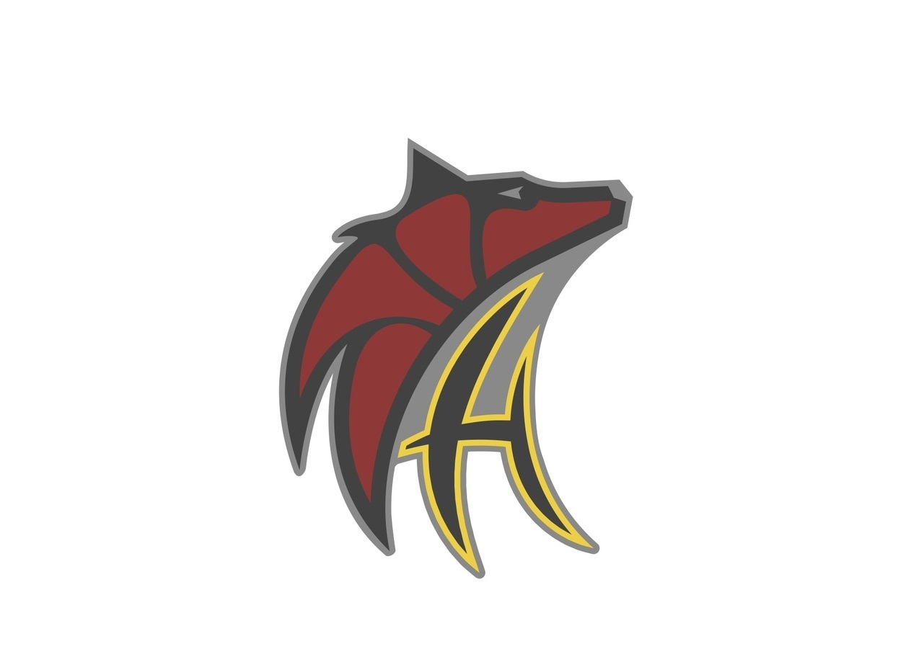
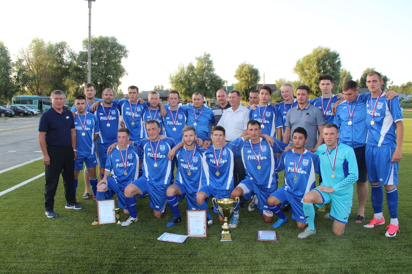

Омский спорт
Нефтяники

Главная
Нефтяники
Нефтяник: Одна из старейших и популярнейших футбольных команд Омской области. С 1967 по 1969 год команда была в числе участников первенства СССР Класс Б. Лучший результат — шестое место в зональном турнире (1968 год).
1955—1964 — «Нефтезавод»
1965—1983 — «Сибирский нефтяник»
с 1984—н.в. — «Нефтяник»
Первенство РСФСР среди КФК (1958, 1959, 1988, 1991) — третье место в зональном турнире (1958).
Кубок РСФСР среди КФК (1978, 1979, 1989) — зональные турниры.
В чемпионате города «Нефтяник» выступает с 1955 года. Является самым титулованным клубом Омской области (городские соревнования).
